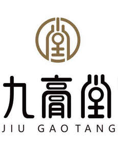

Trade Mark Journal No.2025/047 21 November 2025
UK00004292434 11 November 2025 (5,30,44)

- Class 5
- Capsules for medicines; Decoctions for pharmaceutical purposes; Melissa water for pharmaceutical purposes; Medicinal tea; Medicinal herbs; Ointments for pharmaceutical purposes; Tonics [medicines]; Dietetic foods adapted for medical purposes; Dietetic beverages adapted for medical purposes; Royal jelly for pharmaceutical purposes; By-products of the processing of cereals for dietetic or medical purposes; Medicines for human purposes; Dietetic substances adapted for medical use; Dietary fiber; Preparations of trace elements for human and animal use; Nutritional supplements; Plant extracts for pharmaceutical purposes; Herbal extracts for medical purposes; Nutraceutical preparations for therapeutic or medical purposes; Dietary supplements for human beings.
- Class 30
- Unleavened bread; Candies; Coffee; Starch for food; Honey; Noodles; Pastries; Sauces [condiments]; Malt extract for food; Bee glue; Royal jelly; Tea-based beverages; Cereal-based snack food; Gluten additives for culinary purposes; Flowers or leaves for use as tea substitutes; Freeze-dried dishes with main ingredient being rice; Processed seeds for use as a seasoning; Herbal teas; Tea substitutes; Cocoa substitutes.
- Class 44
- Public bath services for hygiene purposes; Beauty salon services; Convalescent home services; Hospital services; Health care; Medical assistance; Physical therapy; Nursing home services; Nursing, medical; Pharmacy advice; Weed killing; Rental of sanitary installations; Aromatherapy services; Preparation of prescriptions by pharmacists; Therapy services; Health counselling; Rest home services; Home-visit nursing care; Dietary and nutritional advice; Health assessment services.
Wenzhou Jiugaotang Biotechnology Co., Ltd.
Representative: Greg Sach